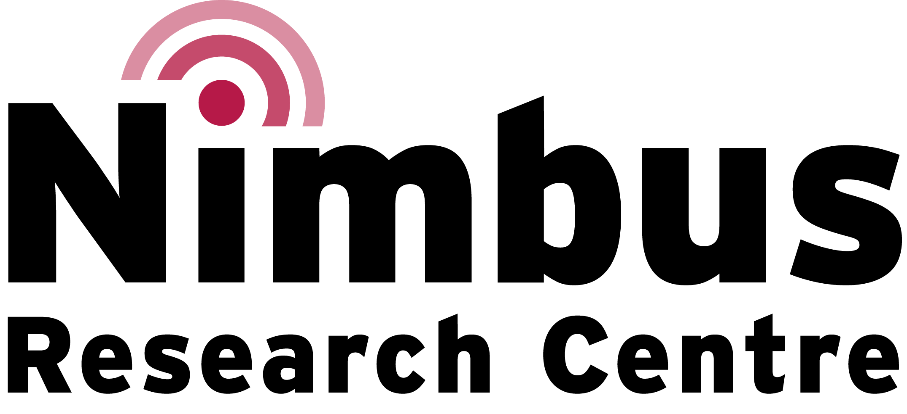
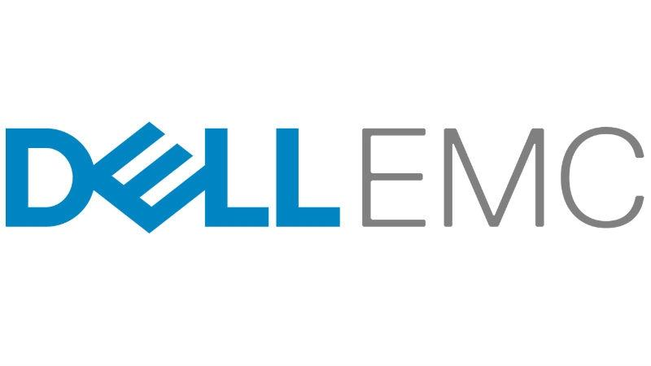
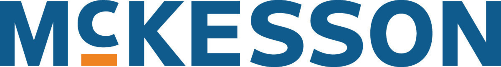
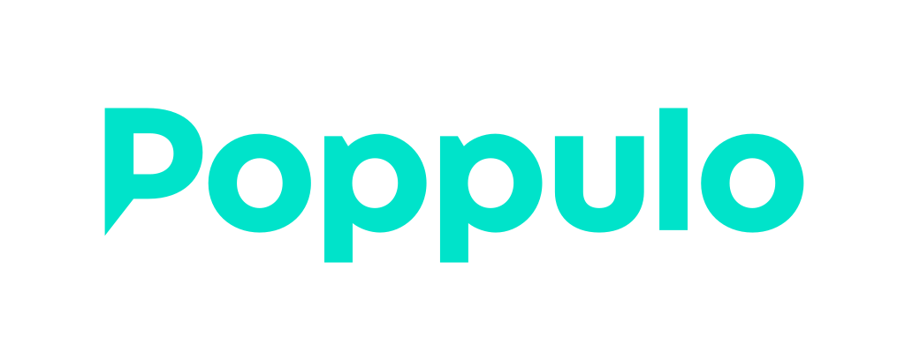
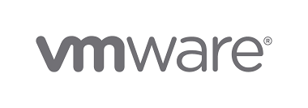

Cork Tech Community Comes Together
to Encourage CIT's Female Students
to Strive for Career Longevity and Excellence
On Friday 1st and 8th of February, 2019 at CIT, tech giants, DellEMC, VMware, IBM, McKesson, Poppulo and Apple are teaming up with the Cork Institute of Technology for a unique Irish event, CIT Advance, that is designed to encourage and empower young women along their technology career path. Forty of CIT's finest female tech students, (Undergrad and Master level), will be attending this two-day seminar at CIT, where they will be provided with expert mentorship by experienced tech professionals.
The idea for the event came into being when Dr. Ramona Marfievici (Nimbus Research Centre, CIT) was invited to San Francisco last year to participate in the Computing Research Association's Committee on the Status of Women in Computing Research (CRA-W) multi-day mentorship workshop for women graduate students called Grad Cohort.
The US-based Grad Cohort Workshop, initiated in 2004, is a progressive mentoring programme that builds and mentors communities of women throughout the US and Canada. The programme brings together female students and successful senior researchers from academia, industry and government laboratories for discussions on how to succeed in graduate school and in a research career. The successful US programme attracts major sponsors to its cause, including Microsoft, Google, Intel, Facebook, Bloomberg and IBM.
In 2018, CRA-W decided to expand its shores and, as a result, Dr. Marfievici was invited, as the Irish representative of an international group of observers from Europe (France, Greece, Ireland, Italy, UK), India and Brazil, to participate in the workshop with a view to learning how to replicate the event in each of their home countries in 2019.
On her return to Ireland, Dr. Marfievici teamed up with CIT colleagues, Oonagh O'Brien, from CIT's Department of Computer Science and Catherine Murphy from the Department of Accounting and Information Systems, who soon brought the wider Cork tech community into the fold and, thus, CIT Advance became a reality.
The CIT Advance event promises to be hugely informative for female techies and a great boost to their future careers. In addition to top class speakers, the event includes a series of workshops in the areas of CV preparation, interview techniques, tips for entering the career market, and advice on how to successfully build a brand. The event will be opened by Dr. Orla Flynn, Vice President for External Affairs at CIT and strong advocate of Women in STEM initiatives.
Workshop organization and support
 |
 |
|  |  |  | |||
|  |
 |